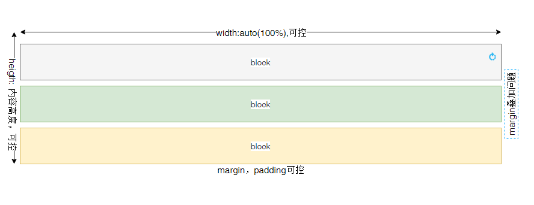
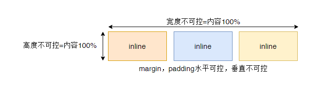
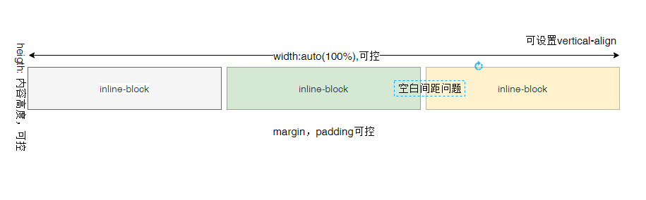

块级元素的特点： （1）独占一行 （2）高度，宽度，行高、外边距以及内边距都可以控制。 （3）宽度默认是容器的100% （4）可以容纳内联元素和其他块元素。

行内元素的特点： （1）和相邻行内元素在一行上。 （2）高、宽无效，但水平方向的padding和margin可以设置，垂直方向的无效。 （3）默认宽度就是它本身内容的宽度。 （4）行内元素只能容纳文本或则其他行内元素。

行内块元素的特点： （1）和相邻行内元素（行内块）在一行上,但是之间会有空白缝隙。 （2）默认宽度就是它本身内容的宽度。 （3）高度，行高、外边距以及内边距都可以控制。 （4）inline-block 元素也可以设置 vertical-align（因为这个垂直对齐属性只对设置了inline-block的元素有效） （5）HTML 中的换行符、空格符、制表符等合并为空白符，字体大小不为 0 的情况下，空白符自然占据一定的宽度，使用inline-block 会产生元素间的空隙 在行内元素中有几个特殊的标签——<img />、<input />、<td>，可以对它们设置宽高和对齐属性，有些资料可能会称它们为行内块元素。